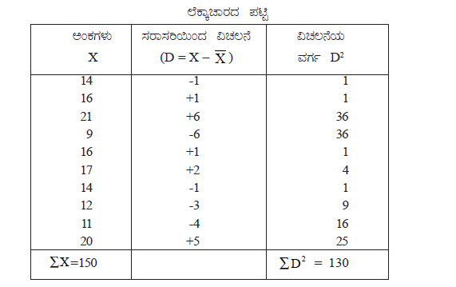
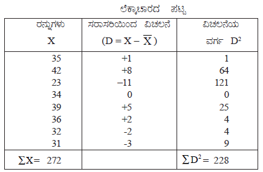

| Home | |
| SEARCH |
೧) ಕೆಳಗಿನ ಹತ್ತು ಪ್ರಾಪ್ತಾಂಕಗಳ ಪ್ರಸರಣೆಯ ವಿಚಲನೆ ಮತ್ತು ಮಾನಕ ವಿಚಲನೆಯನ್ನು ಕಂಡುಹಿಡಿಯಿರಿ. 14, 16, 21, 9, 16, 17, 14, 12, 11 ಫಲಿತಾಂಶವನ್ನು ವಿವರಿಸಿ. ಪರಿಹಾರ : ಪ್ರಾಪ್ತಾಂಕಗಳ ಸಂಖ್ಯೆ N=10 (i) ಸರಾಸರಿಯನ್ನು ಕಂಡುಹಿಡಿಯಿರಿ. ಸರಾಸರಿ = X=ΣX/N =150/10 ಸರಾಸರಿ=15 (ii)ಪ್ರಸರಣೆಯ ವಿಚಲನೆಯನ್ನು ಕಂಡುಹಿಡಿಯಿರಿ. ಪ್ರಸರಣೆಯ ವಿಚಲನೆ =1/NΣD2 =1/10(130) =13 2) ಒಬ್ಬ ಬ್ಯಾಟ್ಸ್ಮನ್ ಎಂಟು ಪಂದ್ಯಗಳಲ್ಲಿ ಗಳಿಸಿದ ರನ್ಗಳು 35, 42, 23, 34, 39, 36, 32 ಮತ್ತು 31 ಆಗಿವೆ. (i)ಸರಾಸರಿ ರನ್ನುಗಳನ್ನು ಮತ್ತು ಮಾನಕ ವಿಚಲನೆಯನ್ನು ಕಂಡುಹಿಡಿಯಿರಿ. (ii) ಫಲಿತಾಂಶವನ್ನು ಹೇಗೆ ವಿವರಿಸುವಿರಿ? ಪರಿಹಾರ : ಪಂದ್ಯಗಳ ಸಂಖ್ಯೆ = N = 8 1) ಸರಾಸರಿರನ್ನು=X=ΣX/N =272/8 =34 ಸರಾಸರಿ=34 ಬ್ಯಾಟ್ಸ್ಮನ್ ಗಳಿಸಿದ ರನ್ಗಳ ಸರಾಸರಿ 34. ರನ್ನುಗಳ ಸರಾಸರಿಯಿಂದ ಉಂಟಾದ ಮಾನಕ ವಿಚಲನೆ 5.34 ಆಗಿದೆ. |